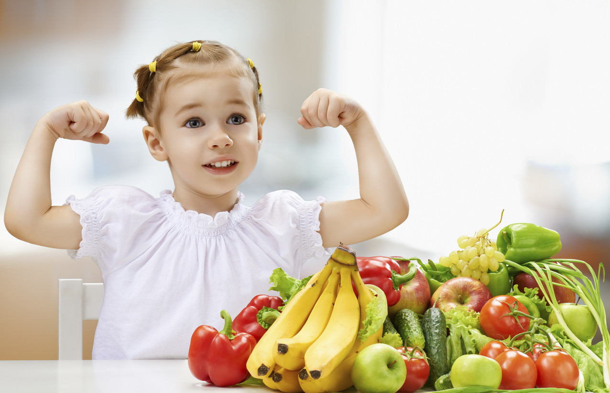

Alimentación saludable para niños
Una alimentación saludable es fundamental para que los niños crezcan fuertes, activos y felices. Comer frutas, verduras, cereales, lácteos y proteínas ayuda al cuerpo a desarrollarse correctamente y a tener energía para jugar, aprender y compartir cada día.
Incorporar hábitos saludables desde la infancia favorece una mejor concentración, fortalece los huesos y el sistema inmunológico, y ayuda a prevenir problemas de salud en el futuro. Aprender a comer bien desde chicos es un paso clave para una vida más sana.

Alimentación saludable y deporte
La alimentación saludable cumple un rol esencial en el rendimiento físico y la recuperación del cuerpo. Consumir los nutrientes adecuados permite mejorar la energía, la resistencia y la fuerza durante la actividad deportiva.
Una dieta equilibrada aporta proteínas para la recuperación muscular, carbohidratos para el rendimiento y grasas saludables para el correcto funcionamiento del organismo. Comer bien es parte del entrenamiento y un factor clave para alcanzar mejores resultados deportivos y reducir el riesgo de lesiones.
Alimentación saludable para toda la familia
Una alimentación saludable es la base del bienestar de toda la familia. Elegir alimentos variados y nutritivos ayuda a mantener la energía diaria, prevenir enfermedades y mejorar la calidad de vida en todas las etapas.
Incorporar hábitos saludables en el hogar fortalece el crecimiento de los niños y el bienestar de los adultos. Comer en familia, planificar las comidas y priorizar alimentos naturales contribuye a una relación más consciente y positiva con la alimentación.